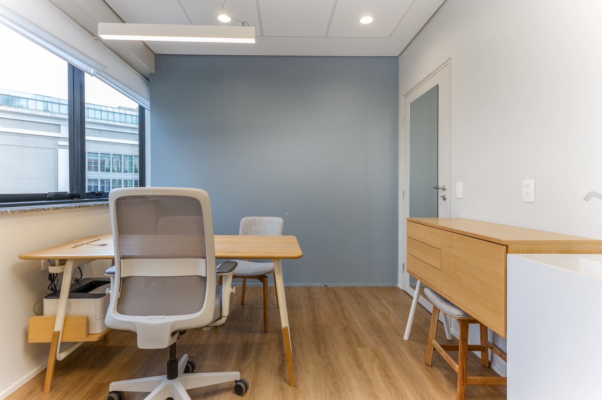

A avaliação neuropsicológica é um exame especializado que tem como principal objetivo mensurar e descrever o perfil de desempenho cognitivo de um indivíduo. Ela busca investigar possíveis alterações nas funções cognitivas, como memória, atenção, raciocínio e linguagem, que podem estar relacionadas a desordens neurológicas, transtornos do desenvolvimento, psiquiátricos ou outras condições que afetam o funcionamento cerebral e comportamental.
Por meio de entrevista e testes neuropsicológicos padronizados, o psicólogo poderá investigar o funcionamento cognitivo e estabelecer as habilidades e as dificuldades específicas de uma pessoa para planejamento de intervenção. O processo é conduzido por um psicólogo especializado em neuropsicologia, que utiliza uma combinação de:
Essas ferramentas permitem uma análise detalhada do funcionamento cognitivo e comportamental do indivíduo, identificando tanto suas habilidades preservadas quanto suas dificuldades específicas. Com base nos resultados, é possível criar um plano de intervenção direcionado para o desenvolvimento e a melhoria do desempenho em diversas áreas da vida.
A avaliação neuropsicológica tem como principal finalidade investigar o perfil cognitivo e comportamental do paciente em situações em que há:
Ao identificar os pontos fortes e as áreas de dificuldade do indivíduo, a avaliação fornece informações fundamentais para orientar intervenções adequadas, promover um melhor desempenho nas atividades diárias e, consequentemente, melhorar a qualidade de vida do paciente.
A Avaliação Neuropsicológica é indicada quando há necessidade de:
Durante a avaliação neuropsicológica, o profissional realiza uma análise detalhada das principais áreas cognitivas e comportamentais, permitindo uma compreensão ampla do funcionamento do indivíduo. Os seguintes aspectos são cuidadosamente observados:
Essa avaliação permite identificar dificuldades, traçar intervenções adequadas e promover o desenvolvimento individual de forma direcionada e eficaz.
Com vinte anos de experiência na área de Psicologia e especialista em Neuropsicologia, Luciana oferece uma vasta gama de serviços personalizados para satisfazer as necessidades psicológicas de seus pacientes. Na consulta, você descobrirá um espaço personalizado e acolhedor, criado para atender necessidades exclusivas de seus pacientes.